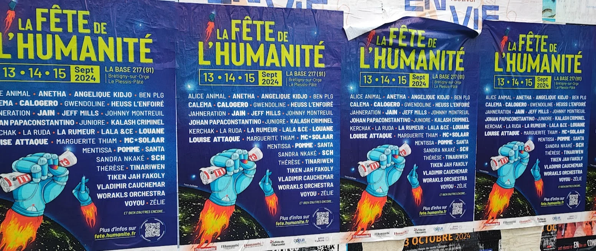
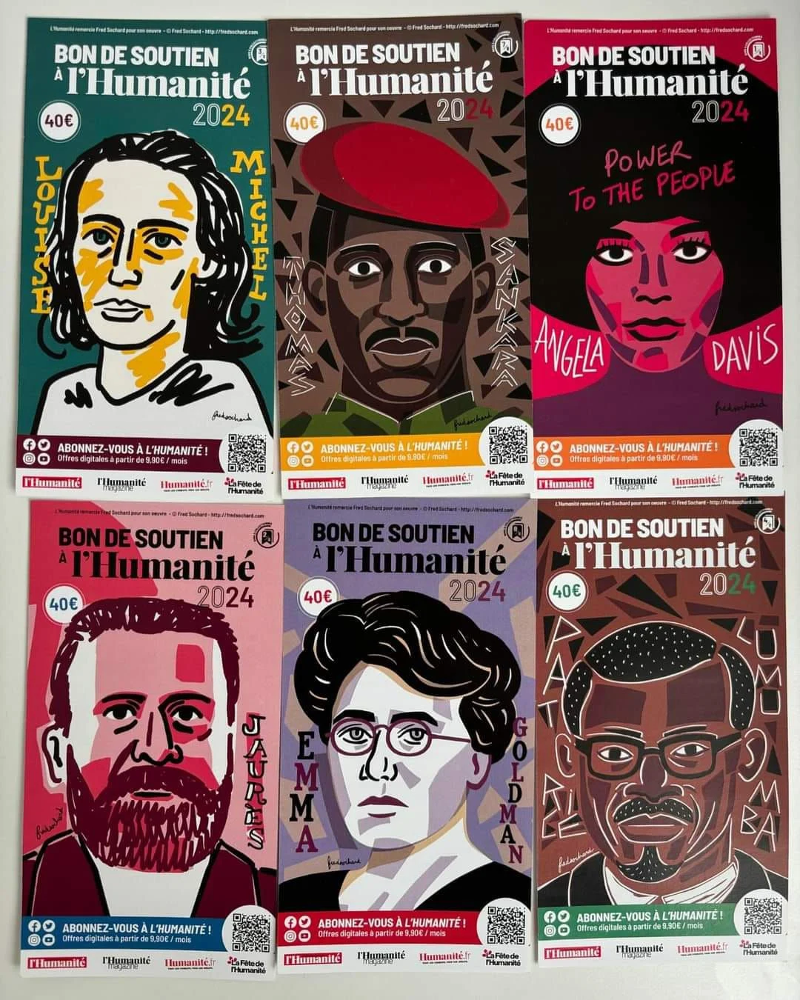

Annonce archivée
Fête de L’Humanité. L’édition 2024 annoncée du 13 au 15 septembre
Date indiquée par Facebook · 2 septembre 2024
Repères éditoriaux
Nous avions relayé les dates de la Fête de L’Humanité à la Base 217, dans l’Essonne. Les visuels annoncent son programme et reproduisent plusieurs unes du journal.
Texte conservé avec la publication
Du 13 au 15 septembre 2024
Fête de l'humanité 2024 à la base 217 du Plessis-Pâté/ Bretigny-sur-Orge (Essonne)
La fête de l'Humanité commence dans dix jours, au cœur de la rentrée sociale et politique, dans une actualité plus brûlante que jamais pour la gauche et le nouveau front populaire, mais aussi pour la Paix dans le monde, la fête de l'Humanité et le journal l'Humanité étant depuis toujours tournés du côté de la solidarité internationale.
La vignette bon de soutien à 40 euros vendue par les militants communistes est un soutien politique et financier à l'existence du journal créé par Jean Jaurès qui fête ses 120 ans cette année, un journal d'éducation populaire de la gauche sociale, et donne droit à l'entrée aux 3 jours de la fête.
Cette année encore, le programme de la fête de l'Humanité sera d'une immense richesse au niveau politique, culturel, musical (Tiken Jah Fakoly, Tinariwen, Angélique Kidjo, Shaka Ponk, Jain, La Rumeur, Louise Attaque, Rodolphe Burger et Sofiane Saidi, Pomme, Mc Solaar, Zélie, etc).


Sources
Archive rouge · export Facebook · AR-0002-FB-01302
À lire aussi · Fête de L’Humanité 2024. Le meeting de Fabien Roussel · Le lien vidéo